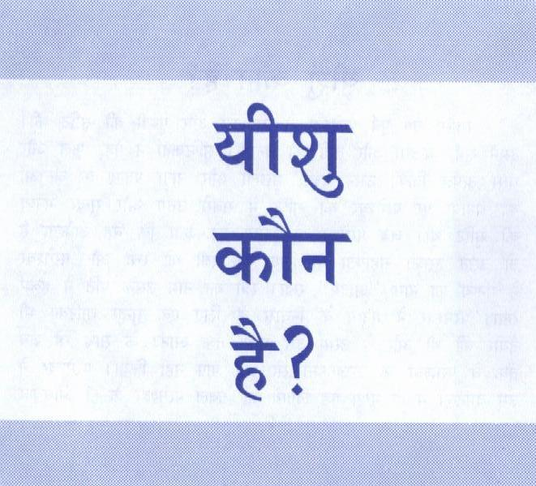
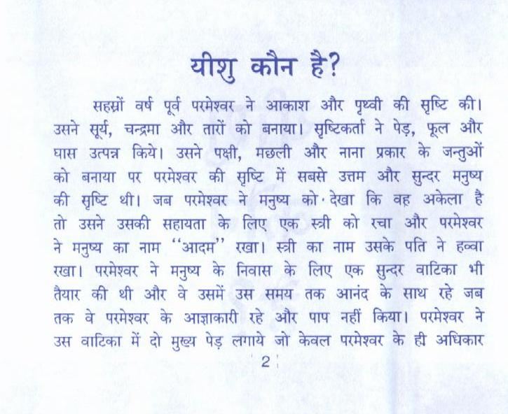
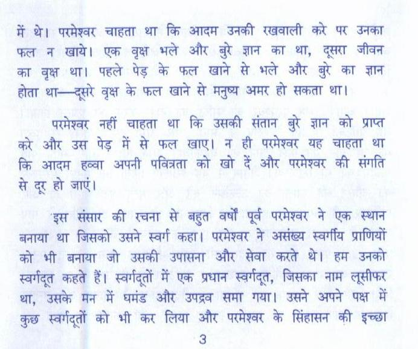
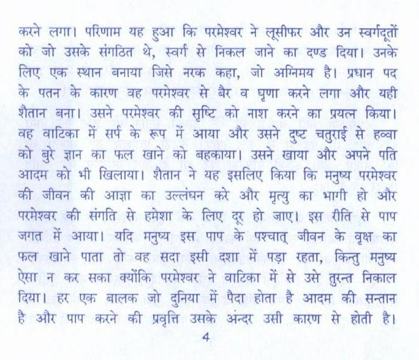
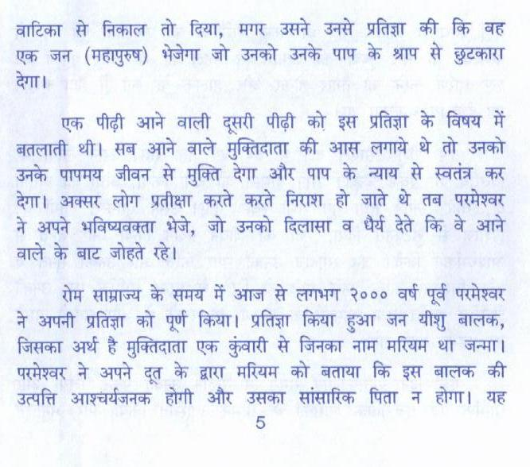
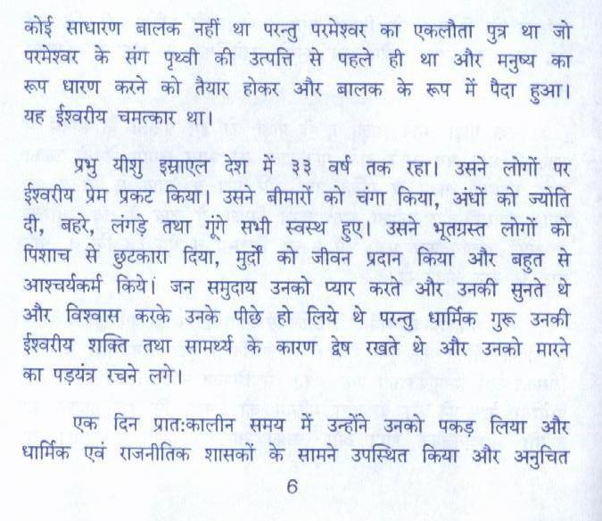
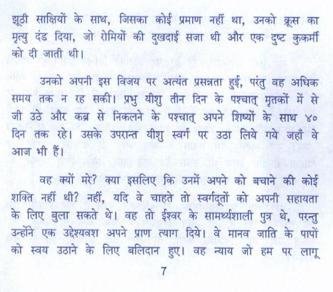
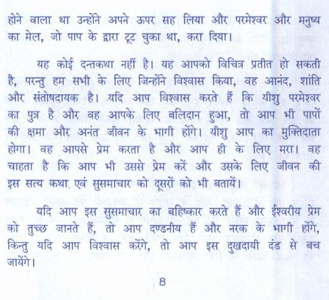
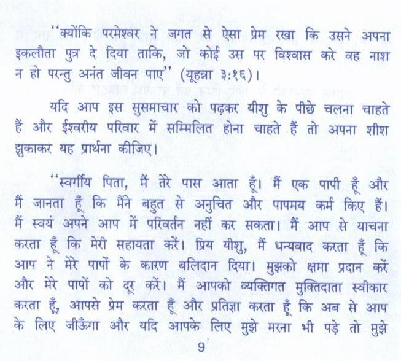
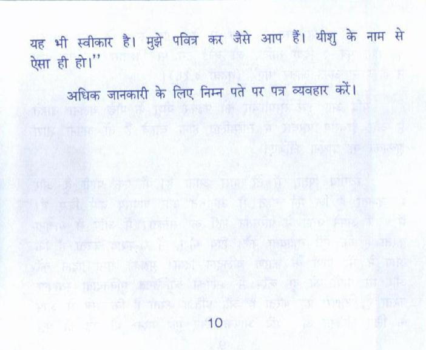

2. यीशु कौन है
Hindi gospel tract · 11 pages · tap a page to enlarge





















Text of this pamphlet
सहस्नों वर्ष पूर्व परमेश्वर ने आकाश और पृथ्वी की सृष्टि की। उसने सूर्य, चन्द्रमा और तारों को बनाया। सृष्टिकर्ता ने पेड़, फूल और घास उत्पन्न किये। उसने पक्षी, मछली और नाना प्रकार के जन्तुओं को बनाया पर परमेश्वर की सृष्टि में सबसे उत्तम और सुन्दर मनुष्य की सृष्टि थी। जब परमेश्वर ने मनुष्य को' देखा कि वह अकेला है तो उसने उसकी सहायता के लिए एक स्त्री को रचा और परमेश्वर ने मनुष्य का नाम “आदम” रखा। स्त्री का नाम उसके पति ने हव्वा रखा। परमेश्वर ने मनुष्य के निवास के लिए एक सुन्दर वाटिका भी तैयार की थी और वे उसमें उस समय तक आनंद के साथ रहे जब तक वे परमेश्वर के आज्ञाकारी रहे और पाप नहीं किया। परमेश्वर ने उस वाढिका में दो मुख्य पेड़ लगाये जो केवल परमेश्वर के ही अधिकार
में थे। परमेश्वर चाहता था कि आदम उनकी रखवाली at पर उनका फल न खाये। एक वृक्ष भले और बुरे ज्ञान का था, दूसरा जीवन का वृक्ष था। पहले पेड़ के फल खाने से भले और बुरे का ज्ञान होता था--दूसेरे वृक्ष के फल खाने से मनुष्य अमर हो सकता था।
परमेश्वर नहीं चाहता था कि उसकी संतान बुरे ज्ञान को प्राप्त को और उस पेड़ में से फल खाए। न ही परमेश्वर यह चाहता था कि आदम wear अपनी पवित्रता को खो दें और परमेश्वर की संगति से दूर हो जाएं।
“इस संसार की रचना से बहुत वर्षों पूर्व परमेश्वर ने एक स्थान बनाया था जिसको उसने स्वर्ग कहा। परमेश्वर ने असंख्य स्वर्गीय प्राणियों को भी बनाया जो उसकी उपासना और सेवा करते थे। हम उनको स्वर्गदृत कहते हैं। स्वर्गदूतों में एक प्रधान स्वर्गदूत, जिसका नाम लूसीफर था, उसके मन में घमंड और उपद्रव समा गया। उसने अपने पक्ष में कुछ स्वर्गदूतों को भी कर लिया और परमेश्वर के सिंहासन की इच्छा
करने लगा। परिणाम यह हुआ कि परमेश्वर ने लूसीफर और उन स्वर्गदूतों को जो उसके संगठित थे, स्वर्ग से निकल जाने का दण्ड fear) उनके लिए एक स्थान बनाया जिसे नरक कहा, जो अग्निमय है। प्रधान पद के पतन के कारण वह परोश्वर से बैर व घृणा करने लगा और यही शैतान बना। उसने परमेश्वर की सृष्टि को नाश करने का प्रयत्न किया। ag बाटिका में सर्प के रूप में आया और उसने दुष्ट चतुराई से हव्वा को बुरे ज्ञान का फल खाने को बहकाया। उसने खाया और अपने पति आदम को भी खिलाया। शैतान ने यह इसलिए किया कि मनुष्य परमेश्वर की जीवन की आज्ञा का उल्लंघन को और मृत्यु का भागी हो और परमेश्वर की संगति से हमेशा के लिए दूर हो जाए। इस रीति से पाप जगत में आया। यदि मनुष्य इस पाप के पश्चात् जीवन के वृक्ष का फल खाने पाता तो वह सदा इसी दशा में पड़ा रहता, किन्तु मनुष्य ऐसा न कर सका क्योंकि परमेश्वर ने वाटिका में से उसे eat निकाल fear) हर एक बालक जो दुनिया में पैदा होता है आदम की aI है और पाप करने की प्रवृत्ति उसके ster उसी कारण से होती है।
वाटिका से निकाल तो दिया, मगर उसने उनसे प्रतिज्ञा की कि वह एक जन (महापुरुष) भेजेगा जो उनको उनके पाप के श्राप से छुटकारा
एक पीढ़ी आने वाली दूसरी पीढ़ी को इस प्रतिज्ञा के विषय में बतलाती थी। सब आने वाले मुक्तिदाता की आस लगाये थे तो उनको उनके पापमय जीवन से मुक्ति देगा और पाप के न्याय से स्वतंत्र कर देगा। अक्सर लोग प्रतीक्षा करते करते निराश हो जाते थे तब परमेश्वर ने अपने भविष्यवक्ता भेजे, जो उनको दिलासा व घैर्य देते कि वे आने art के ae जोहते रहे।
रोम साम्राज्य के समय में आज से लगभग २००० वर्ष पूर्व परमेश्वर
ने अपनी प्रतिज्ञा को पूर्ण किया। प्रतिज्ञा किया हुआ जन यीशु बालक,
जिसका अर्थ है मुक्तिदाता एक कुंवारी से जिनका नाम मरियम ar जन्मा।
परमेश्वर ने अपने दूत के द्वारा मरियम को बताया कि इस बालक की
उत्पत्ति आश्चर्यजनक होगी और उसका सांसारिक पिता न होगा। यह
कोई साधारण बालक नहीं था परन्तु परमेश्वर का एकलौता पुत्र था जो परमेश्वर के संग पृथ्वी की उत्पत्ति से पहले ही था और मनुष्य का रूप धारण करने को तैयार होकर और बालक के रूप में पैदा हुआ। यह ईश्वरीय चमत्कार था।
प्रभु यीशु इस्राएल देश में ३३ वर्ष तक रहा। उसने लोगों पर ईश्वरीय प्रेम प्रकट किया। उसने बीमारों को चंगा किया, अंधों को ज्योति दी, ae, लंगड़े तथा गूंगे सभी स्वस्थ हुए। उसने भूतग्रस्त लोगों को पिशाच से छुटकारा दिया, मुर्दों को जीवन प्रदान किया और बहुत से आश्चर्यकर्म किये। जन समुदाय उनको प्यार करते और उनकी सुनते थे और विश्वास करके उनके पीछे हो लिये थे परन्तु धार्मिक गुरू उनकी ईश्वरीय शक्ति तथा सामर्थ्य के कारण द्वेष रखते थे और उनको मारने का पड़यंत्र रचने लगे।
एक दिन प्रातःकालीन समय में उन्होंने उनको पकड़ लिया और धार्मिक एवं राजनीतिक शासकों के सामने उपस्थित किया और अनुचित
झूठी साक्षियों के साथ, जिसका कोई प्रमाण नहीं था, उनको क्रूस का मृत्यु दंड दिया, जो रोमियों की दुखदाई सजा थी और एक दुष्ट कुकर्मी को दी जाती थी।
उनको अपनी इस विजय पर अत्यंत प्रसन्नता हुई, परंतु बह अधिक समय तक न रह सकी। प्रभु यीशु तीन दिन के पश्चात् मृतकों में से जी उठे और कब्र से निकलने के पश्चात् अपने शिष्यों के साथ ४० दिन तक रहे। उसके उपरान्त यीशु स्वर्ग पर उठा लिये गये जहाँ बे आज भी हैं।
वह क्यों at? क्या इसलिए कि उनमें अपने को बचाने की कोई शक्ति नहीं थी? नहीं, यदि बे चाहते तो स्वर्गदूतों को अपनी सहायता के लिए बुला सकते थे। वह तो ईश्वर के सामर्थ्यशाली पुत्र थे, परन्तु उन्होंने एक Reva अपने प्राण त्याग दिये। वे मानव जाति के पापों को स्वय उठाने के लिए बलिदान हुए। वह न्याय जो हम पर लागू
होने बाला था उन्होंने अपने ऊपर सह लिया और परमेश्वर और मनुष्य का मेल, जो पाप के द्वारा ee चुका था, करा दिया।
यह कोई दन्तकथा नहीं है। यह आपको विचित्र प्रतीत हो सकती है, परन्तु हम सभी के लिए जिन्होंने विश्वास किया, वह आनंद, शांति और संतोषदायक है। .यदि आप विश्वास करते हैं कि यीशु परमेश्वर का पुत्र है और बह आपके लिए बलिदान हुआ, तो आप भी पापों की क्षमा और अनंत जीवन के भागी होंगे। यीशु आप का मुक्तिदाता होगा। वह आपसे प्रेम करता है और आप ही के लिए am वह चाहता है कि आप भी उससे प्रेम at sie उसके लिए जीवन की इस सत्य कथा, एवं सुसमाचार को दूसरों को भी बतायें।
यदि आप इस सुसमाचार का बहिष्कार करते हैं और ईश्वरीय प्रेम को तुच्छ जानते हैं, तो आप दण्डनीय हैं और नरक के भागी होंगे, किन्तु यदि आप विश्वास करेंगे, तो आप इस दुखदायी दंड से बच
“क्योंकि परमेश्वर ने जगत से ऐसा प्रेम रखा कि उसने अपना इकलौता पुत्र दे दिया ताकि, जो कोई उस पर विश्वास at वह नाश न हो परन्तु अनंत जीवन पाए” (यूहन्ना ३:१६)।
यदि आप इस सुसमाचार को पढ़कर यीशु के पीछे चलना चाहते हैं और ईश्वरीय परिवार में सम्मिलित होना चाहते हैं तो अपना शीश झुकाकर यह प्रार्थना कीजिए।
“स्वर्गीय पिता, मैं तेरे पास आता हूँ। मैं एक पापी हूँ और मैं जानता हूँ कि मैंने बहुत से अनुचित और पापमय कर्म किए हैं। मैं स्वयं अपने आप में परिवर्तन नहीं कर सकता। मैं आप से याचना करता हूँ कि मेरी सहायता at) प्रिय यीशु, मैं धन्यवाद करता हूँ कि आप ने मेरे पापों के कारण बलिदान दिया। मुझको क्षमा प्रदान at और मेरे पापों को दूर करें। मैं आपको व्यक्तिगत मुक्तिदाता स्वीकार करता हूँ, आपसे प्रेम करता हूँ और प्रतिज्ञा करता हूँ कि अब से आप के लिए जीऊँगा और यदि आपके लिए मुझे मरना भी पढ़े तो मुझे
यह भी स्वीकार है। मुझे पवित्र कर जैसे आप हैं। यीशु के नाम से ऐसा ही er”
अधिक जानकारी के लिए निम्न पते पर पत्र व्यवहार FI
For Further Information write to; INDIA BIBLE LITERATURE
a Horamavu Post ॥ Hennur Bancay.
Text extracted automatically from the scanned pamphlet; please refer to the page images for the exact wording.